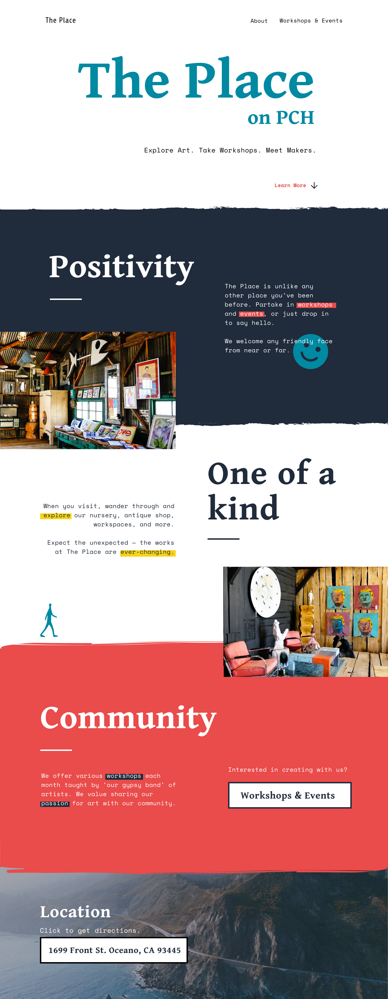

Role
Team
Software
Skills
UI/UX Designer, Front-End Development
Jessica Rose, Aaron Matsuda
Adobe XD, Brackets
Web Design, Prototyping, HTML/CSS, JQuery

The Place offers a multitude of things — an art gallery, various artist workshops, an antique shop, a nursery, and various event gatherings. The Place is located on Pacific Coast Highway and is a family-run business. Their objective for the website was to drive traffic towards The Place and to showcase their various workshops. Because The Place is constantly changing — replacing new art and constructing new parts to the building — we wanted to create a typography-driven website. The Place is so unique, we wanted our website to convey that as well and be a design that is a little out of the box from the standard layout.
We worked together on developing copy that would best describe to new users what The Place was because categorizing it as an art gallery is limiting and not reflective of what it really is. We then sketched the layout of the content. Our decision was to guide them down a presentation-like website. At the end, the user was guided to Workshops & Events.
Workshops & Events would have an interactive calendar that users could click on to see upcoming workshops and events. They could then filter or sort by different categories.
We designed a couple drafts and had a group critique which led to this being the final hi-fidelity prototype. The section headers represent the values The Place wants to convey to the world. We did end up including a couple images of The Place so users could have a general idea of the aesthetics and type of art it exhibits.
My team members and I split up coding these pages among the three of us using Brackets. I coded the homepage and Jessica and Aaron developed the workshops page.